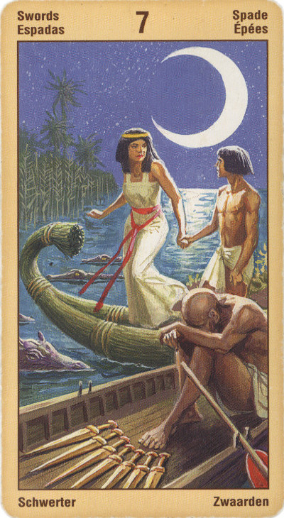

Семёрка Мечей — Тщетность
Прямое положение: замысел, попытка, желание, надежда, конфиденциальное сообщение; также повод к вражде; раздражение.
Значение: Это – человек, привычно пытающийся при помощи хитрости найти выход из сложной ситуации, избежать конфликта. унести, режут руки. Нельзя решать новые проблемы старыми методами, говорит эта карта.
Новые представления бросают вызов старым предположениям, появляются новые идеи, развивается интуиция и понимание, наблюдается большой прогресс.
Вы можете использовать свой интеллект, остроумие и обаяние для того, чтобы получить обратно то, что было утеряно ранее. Эта карта может относиться к исследованиям, к стратегическому планированию или же, что не исключено, к шпионажу, обману, хитрости или побегу.
Сила познания, ясный, острый ум превращаются здесь в хитрости и интриги, подлость и обман. В более мягкой форме это может быть злой язык, интеллектуальное высокомерие или позиция "моя хата с краю" - нежелание замечать какие-то вещи, привычка юлить, увиливать, филонить и т.п. При этом непонятно, кто кого тут обманывает, кто мы - жулик или жертва. Но чаще всего оказывается, что мы вредим тут сами себе.
Человеческая фантазия может рисовать прекрасные миры - однако она не в состоянии воплотить эти миры в жизни, поэтому эту декаду называют - "Тщетность".
В прямом положении - новые планы, очарование, надежда, вера, фантазия.
Еще один аспект перевернутой семерки мечей - умение действовать скрытно, способность уходить от опасности, не конфликтовать в открытую с противником, действовать хитростью. Карта может указывать и на нечто скрытое в человеке, неосознанное, подавленное.
Появление в раскладе Семерки Мечей означает, что ваша жизнь вступила в полосу перемен — вы уже «повернули в сторону» и уклонились от прежних ориентиров. Один этап вашей жизни сменяется другим, и до тех пор, пока эти перемены не приведут к переустройству всех сфер деятельности, вы будете чувствовать себя хоть и воодушевленно, но и несколько неуютно. О том, какие именно изменения вас ожидают, вы легко догадаетесь, разобравшись в значениях соседних Арканов. Особенно же следует обратить внимание на характер выпавшего при гадании Старшего Аркана - он обычно определяет всю ситуацию в целом. Так, при появлении Аркана «Повешенный» вы можете с большой долей уверенности предсказать, что впереди - потеря имущества либо положения.
Зато выпадение Семерки Мечей с такими Арканами, как «Мир» или «Солнце», наоборот, означает приобретение и удачу (в той сфере жизни, на которую гадаете).
Карта надежды. Преодоление препятствий, хороший совет, неожиданность. Избавление от вредных привычек. Совет делать то, чего не ожидают от гадающего. Также совет никому не рассказывать о планах гадающего, чтобы их не могли сорвать.
В перевернутом положении — план обречен на неудачу, может указывать и на недостаток энергии для достижения задуманного, а также непризнание окружающими.
Эттейлла- Ключевые слова: Ждите новостей или изменений. Или консультация с экспертом.
Прямое значение: Надежда.
Перевернутое значение: Мудрые мнения.
Число семь считалось всегда очень благоприят¬ным гадателями на картах, потому что свет сотворен в шесть дней, а седьмой посвящен был отдыху. Семер¬ка Мечей сулит неопределенность, имеется тенденция потерпеть неудачу в последний момент, сдавшись слишком быстро; метания из стороны в сторону, нена¬дежность человека или ситуации; соглашательство и слабоволие могут привести к плохим результатам. Карта может быть связана с какими-либо планами, амбициями, желаниями; сухопутное путешествие; возможная опасность ранения во время игры или путешествия.
В перевернутом положении — добрый совет, муд¬рость, предусмотрительность.